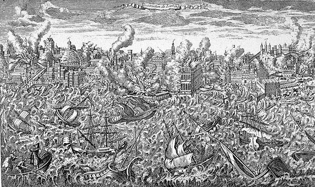

Histoire
Du Néolithique à l'Empire romain
Le château de Saint-Georges a joué un rôle important dans l'histoire de Lisbonne tout au long des années, par exemple, en protégeant ses citoyens ou en servant de résidence de la famille royale.
Durant le Néolithique, la région est habitée par une branche de la population indo-européenne appelée pré-ibère. Comme ailleurs en Europe atlantique, cette population construit des monuments religieux tels que des mégalithes, des dolmens et des menhirs, encore visibles aujourd'hui aux alentours de la ville. Certains peuples celtes entrent en contact avec les pré-ibères et s’établissent dans la région plus de mille ans avant notre ère, aboutissant ainsi à l'apparition de tribus de langue celte comme les Conii et les Cempsi.
Pendant les Guerres puniques, après la mort d'Hannibal Barca (dont les troupes comprennent des Conii), les Romains décidèrent de priver Carthage de sa possession la plus précieuse : l'Hispanie, nom donné par les Romains à la péninsule Ibérique. Après la défaite carthaginoise face à Scipion l’Africain en Hispanie orientale, la pacification de l'ouest est menée à bien par le consul Decimus Junius Brutus Callaicus.
Il signa un accord avec Olissipo, ancien nom de Lisbonne, pour que celle-ci envoie ses habitants combattre avec les légions romaines contre les tribus celtibères du nord-ouest. En retour, Olissipo est intégrée à l'Empire sous le nom de Felicitas Julia, devenant un municipe de droit romain. L'autonomie politique lui est accordée sur un territoire de 50 km autour de la cité ; les habitants sont exemptés d'impôt et obtiennent la citoyenneté romaine. La ville fait alors partie de la province de Lusitanie dont la capitale est Emerita Augusta (aujourd'hui Mérida). Les attaques des Lusitaniens contre la ville pendant les fréquentes rébellions rendent nécessaire l’érection d'une muraille.
Sous le règne de l'empereur Auguste, les Romains y construisent plusieurs édifices : un grand théâtre, des thermes, situés dans l'actuelle rua da Prata, les temples de Jupiter, de Cybèle et de Téthys, des temples en l'honneur de l'empereur, une grande nécropole sous l'actuelle place de Figueira, un forum et d'autres bâtiments comme les insulae, une zone de logements située entre l'actuelle colline du château et le centre de la ville. Beaucoup de ces ruines sont mises au jour vers le milieu du xviiie siècle, avec la mode de l’archéologie née de la découverte de Pompéi.
Olissipo était connue pour son garum, exporté dans des amphores jusqu'à Rome. Le vin, le sel et ses chevaux réputés sont les principaux produits d'exportation de la ville. Elle prospère avec la disparition de la piraterie et les progrès techniques qui permettent l’expansion du commerce avec les nouvelles provinces romaines de Bretagne et de la région du Rhin, ainsi qu’avec les populations de la vallée du Tage. La cité est régie par une oligarchie dominée par deux familles, les Julii et les Cassii.
Le plus célèbre Romain ayant résidé à Lisbonne est Sertorius, ancien partisan de Marius et en lutte contre le dictateur Sylla. La majorité des habitants parle le latin, avec des minorités de commerçants grecs et d'esclaves. La ville est reliée par la route à deux autres villes, Bracara Augusta (aujourd'hui Braga) et Emerita Augusta, (aujourd'hui Mérida).
Conquête musulmane
Lisbonne est prise par les Maures vers 71923 et est rebaptisée al-ʾIšbūnah, الأشبونة en arabe, sous le gouvernement desquels la ville prospère. Les Maures, qui étaient des musulmans du nord de l'Afrique et du Proche-Orient, construisent plusieurs mosquées, des habitations et les murailles de la ville, actuellement appelées Cerca Moura24. La ville abrite une population mélangée de chrétiens, de berbères, d’arabes, de juifs et de saqālibas.
L'arabe est imposé comme langue officielle. Le mozarabe reste parlé par la population chrétienne. L'islam est la religion officielle, pratiquée par les Maures et les muladís, alors que chrétiens et juifs peuvent pratiquer leur religion, en qualité de dhimmis, à condition d’acquitter la djizîa, impôt différent de la zakât à laquelle est soumise la population musulmane.
En 844, Lisbonne est assiégée par les Vikings. La ville, bien protégée, aurait résisté aux assaillants, mais en 858, de nouveau attaquée par les pirates scandinaves, elle est prise et pillée par le chef viking Hasting25. En 966, vingt-huit navires vikings attaqueront une nouvelle fois Lisbonne, sans succès26.
Pendant la période dite des taïfas, Lisbonne appartient à la taïfa de Badajoz, et est dirigée par Sabur al-Saqlabi.
En 1147, pendant la Reconquista, un groupe de chevaliers français, anglais, allemands, et portugais, conduits par Alphonse Ier, assiègent et prennent Lisbonne. La reconquête du Portugal et le rétablissement du christianisme forment un des événements les plus significatifs de l'histoire lisboète.
L'arabe ayant perdu son statut de langue officielle cesse peu à peu d'être utilisé dans la vie quotidienne. La population musulmane est expulsée, tandis que les mosquées sont transformées en églises. Seul le quartier de la Mouraria, qui tire son nom des Maures, conserve une population musulmane jusqu’au xvie siècle27.
Du Moyen Âge à l'Empire portugais
Lisbonne reçoit son premier for, statut juridique de protection royale (en portugais aforamento) en 1179. Elle devient la capitale du Portugal en 1255, remplaçant Coimbra grâce à sa situation centrale sur le territoire portugais. Pendant les derniers siècles du Moyen Âge, la ville connaît un fort développement et devient un centre économique important.
En 1290, Denis Ier fonde une école universitaire appelée Estudo Geral (Étude Générale), devenue l’université de Coimbra, transférée à plusieurs reprises dans cette dernière ville pour s'y fixer de manière définitive au xvie siècle.
Les expéditions maritimes portugaises des Grandes Découvertes partirent pour la plupart de Lisbonne entre le xve et le xviie siècle, y compris l'expédition de Vasco de Gama vers les Indes, en 1497. Le xvie siècle est l’âge d'or de Lisbonne. La ville s'impose comme centre du commerce européen avec l'Extrême-Orient, tout en recevant l’or du Brésil. Les Portugais se révèlent maîtres dans l'art de la navigation et de la cartographie, activité importante de Lisbonne (six ateliers employant dix-huit personnes en 1552)28.
Après l'intégration du Portugal à la Couronne de Philippe II d'Espagne en 1580, il est envisagé d'installer la cour royale à Lisbonne, mais c'est finalement à Madrid que se fixe la capitale. Les principaux troubles de la restauration de 1640, qui aboutissent à l'indépendance du Portugal, sont observés à Lisbonne. Le 26 janvier 1531, la ville subit un violent séisme qui fait des milliers de victimes. Au début du xviiie siècle, pendant le règne de Jean V, la ville se dote d'une infrastructure remarquable pour l'époque, l'aqueduc des Eaux libres.
Le 1er novembre 1755, Lisbonne est détruite par un tremblement de terre, suivi d'un raz-de-marée et d'incendies, qui tuent entre 60 000 et 90 000 habitants et détruisent 85 % de la ville. Voltaire écrit le Poème sur le désastre de Lisbonne après cette catastrophe et mentionne le séisme dans son roman Candide, en 175929 ; sa critique de l'optimisme pourrait avoir été inspirée par cet événement[réf. souhaitée].
Après le séisme de 1755, la ville est reconstruite selon les plans du marquis de Pombal, d'où le nom de Baixa Pombalina donné au centre de la ville. Au lieu de reconstruire la cité médiévale, le marquis de Pombal décide de détruire ce qui a résisté au séisme et de rebâtir la ville selon les principes de l'urbanisme de l'époque. Le quadrillage adopté sur les plans de reconstruction permit de concevoir les places de Rossio et de Terreiro do Paço, cette dernière avec une très belle arcade ouverte sur le Tage.
xixe et xxe siècles
Au début du xixe siècle, le Portugal est envahi par les troupes françaises de Napoléon Ier, obligeant le roi Jean VI à s'enfuir dans la colonie du Brésil30. Lisbonne souffre particulièrement de cette invasion au cours de laquelle de nombreuses propriétés sont pillées par les Français. Durant la guerre civile portugaise, de 1828 à 1834, la ville vit intensément les luttes libérales et l’ouverture des premiers cafés et théâtres. En 1879 est créée l’Avenida da Liberdade qui permet à la métropole portugaise de s’étendre au-delà de la Baixa.
Le 1er février 1908, la Praça do Comércio est la scène d'un régicide : deux membres de la famille royale sont tués, le roi Charles Ier et son fils et héritier Louis-Philippe de Bragance, auxquels s'ajoute un blessé, Manuel de Bragance qui devient par la suite roi de Portugal31. En 1909, les ouvriers de Lisbonne organisent de grandes grèves. En 1910, les Lisbonnais se soulèvent contre la monarchie, la population forme des barricades dans les rues et distribue des armes. Le reste du pays suit la révolte, bien que le pays reste profondément agricole, catholique et conservateur. Le 5 octobre est proclamée la première République Portugaise32.
Pendant la Seconde Guerre mondiale, Lisbonne est un des rares ports neutres de l'Europe atlantique et la ville devient une porte de sortie pour les réfugiés vers les États-Unis ainsi qu'un nid d'espions. En 1940, la ville est choisie par l'Estado Novo pour recevoir l'Exposition du Monde Portugais, du 23 mai au 2 juin 194033.
C'est à Lisbonne qu’est déclenchée, en 1974, la Révolution des œillets qui met fin au régime dictatorial de Salazar, instauré en 1928. En 1985 est signé le Traité d'Adhésion à la Communauté économique européenne, dans le monastère dos Jeronimos. Le 25 août 1988, un violent incendie ravage le centre historique de Lisbonne, plus exactement le quartier du Chiado, fait 72 blessés et bouleverse la vie quotidienne et économique dans ce secteur pendant dix années34. Lisbonne est Capitale européenne de la culture en 199435.
L'Expo '98 coïncide avec la célébration du 500e anniversaire du voyage sur la Route des Indes de Vasco de Gama. Cet événement est l’occasion d'une restructuration profonde de la ville, avec la suppression d'une friche industrielle pour laisser la place à l'exposition internationale.
Lisbonne contemporain
La stratégie de Lisbonne est un accord de l'Union européenne sur des mesures de revitalisation de l'économie de l'Union, signée à Lisbonne en mars 2000. En octobre 2007, la capitale accueille, dans le monastère des Hiéronymites, le sommet 2007 de l'Union européenne, où est conclu un accord concernant un nouveau modèle de gouvernement de l'union. Le traité de Lisbonne est signé le 13 décembre 2007 et entre en vigueur le 1er décembre 200937.
Le 3 novembre 2005, Lisbonne accueille, dans le Pavilhão Atlântico, les récompenses européennes de musique de MTV38. La ville est deux fois, en 2006 et 2007, le point de départ du rallye Dakar et l'épreuve de 2008 doit avoir pour départ Lisbonne une fois de plus, mais à la suite de l'annulation du rallye, aucune compétition n'a lieu. Le festival Rock in Rio choisit la capitale portugaise pour accueillir les éditions 2004, 2006, 2008 et 2010, d'autres éditions étant prévues à Lisbonne bien que l'édition de 2011 ait lieu à Rio de Janeiro.